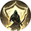

Инстинкт выживания
Открыть в интерактивной вики →
Описание
Суровые условия жизни в диких таэрнийских лесах научили Лучников заранее распознавать опасность. Инстинкт заставляет их любой ценой бороться за выживание, с чем им помогает отвар лесных трав, который те распыляют вокруг себя. Он создает щит, который принимает на себя часть урона, но при этом ограничивает выносливость Лучника и свойства орба Фу'ат. С каждым полученным ударом щит ослабевает, но выброс адреналина после удачной атаки (не по области), наносящей урон, возобновляет его.
Тип: самобафф
Сложность: низкая
Тип: самобафф
Сложность: низкая
Уровни навыка
| Уровень навыка | Требуемый уровень | Мана | Заблокированная выносливость | Максимальная защита | Усиление попаданием | Конверсия выносливости на покров | Урон, переносимый на покров | Раунды |
|---|---|---|---|---|---|---|---|---|
| I | 26 | 12 | 14% | 60% ОЗ | 10% покрова | 77% | 60% | 1 |
| II | 27 | 13 | 15% | 60% ОЗ | 10% покрова | 85% | 60% | 1 |
| III | 28 | 14 | 17% | 60% ОЗ | 10% покрова | 94% | 60% | 1 |
| IV | 29 | 16 | 18% | 60% ОЗ | 10% покрова | 102% | 60% | 1 |
| V | 30 | 17 | 20% | 60% ОЗ | 10% покрова | 111% | 60% | 1 |
| VI | 31 | 18 | 21% | 60% ОЗ | 10% покрова | 119% | 60% | 1 |
| VII | 32 | 19 | 23% | 60% ОЗ | 10% покрова | 128% | 60% | 1 |
| I | 33 | 21 | 24% | 60% ОЗ | 10% покрова | 136% | 60% | 1 |
| II | 34 | 23 | 26% | 60% ОЗ | 10% покрова | 145% | 60% | 2 |
| III | 35 | 25 | 27% | 60% ОЗ | 10% покрова | 153% | 60% | 2 |
| IV | 36 | 26 | 29% | 60% ОЗ | 10% покрова | 162% | 60% | 2 |
| V | 37 | 28 | 30% | 60% ОЗ | 10% покрова | 170% | 60% | 2 |
| VI | 38 | 30 | 32% | 60% ОЗ | 10% покрова | 179% | 60% | 2 |
| VII | 39 | 32 | 33% | 60% ОЗ | 10% покрова | 187% | 60% | 2 |
| I | 40 | 34 | 35% | 60% ОЗ | 10% покрова | 196% | 60% | 2 |
| II | 41 | 37 | 36% | 60% ОЗ | 10% покрова | 204% | 60% | 2 |
| III | 42 | 39 | 38% | 60% ОЗ | 10% покрова | 213% | 60% | 2 |
| IV | 43 | 41 | 39% | 60% ОЗ | 10% покрова | 221% | 60% | 2 |
| V | 44 | 44 | 41% | 60% ОЗ | 10% покрова | 230% | 60% | 2 |
| VI | 45 | 46 | 42% | 60% ОЗ | 10% покрова | 238% | 60% | 3 |
| VII | 46 | 49 | 44% | 60% ОЗ | 10% покрова | 247% | 60% | 3 |